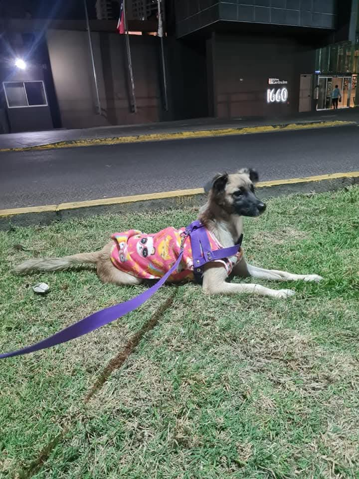
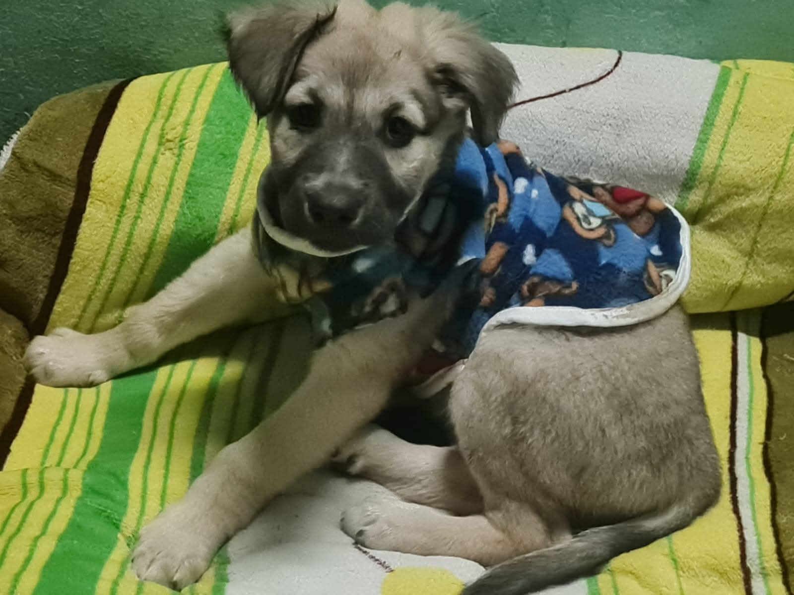
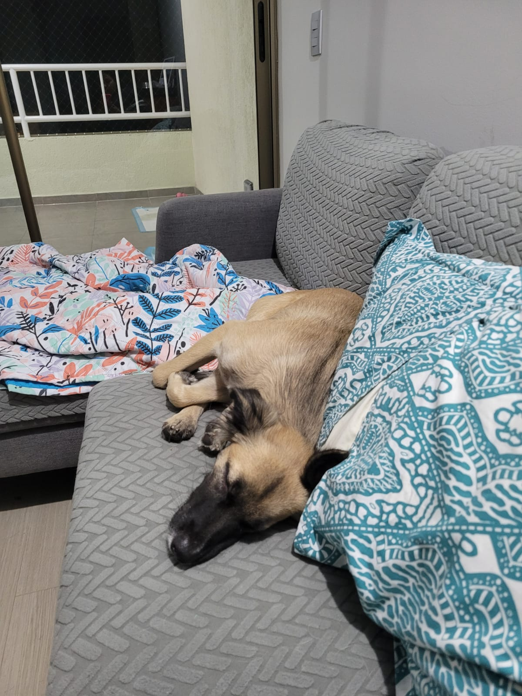

6
Cachorros nacidos
Proyecto comunitario
Un recurso simple para que más personas sepan cómo actuar cuando encuentran un animal en riesgo.
6
Cachorros nacidos
4
Cachorros adoptados
1
Mamá esterilizada y a salvo
100%
Hecho con amor comunitario
Revisa si hay riesgo de tránsito o agresión. Muévelo solo si es seguro. Agua, sombra y calma primero.
Si está herido o muy débil, busca clínica de inmediato. Pide apoyo comunitario para cubrir gastos.
Publica fotos claras, ubicación, estado de salud y contacto. Eso acelera ayuda y adopción.
Un espacio seguro, comida y seguimiento pueden salvar su vida mientras llega la familia definitiva.
"URGENTE | [Ciudad, zona] Perro/gato encontrado [fecha]. Estado: [herido/desnutrido/estable]. Necesita: [veterinaria/hogar temporal/adopción]. Contacto: [teléfono/Instagram]."
Flaca fue abandonada preñada en un aeropuerto. Tras el rescate, atención y acompañamiento, sus cachorros fueron adoptados y ella hoy vive esterilizada, cuidada y feliz.



Si quieres sumar tu ayuda, comparte esta página y súmate con uno de estos aportes:
Ideal si ya usas GitHub. Gratis, simple y perfecto para sitios estáticos como este.
Muy fácil para arrancar. Despliegue automático desde GitHub y HTTPS incluido.
Excelente rendimiento y previsualización por cada cambio que subas.
Tip: publica primero en Netlify por rapidez y luego conecta un dominio propio cuando el proyecto crezca.